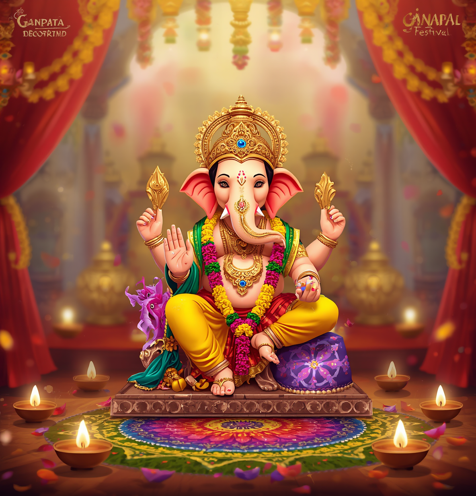
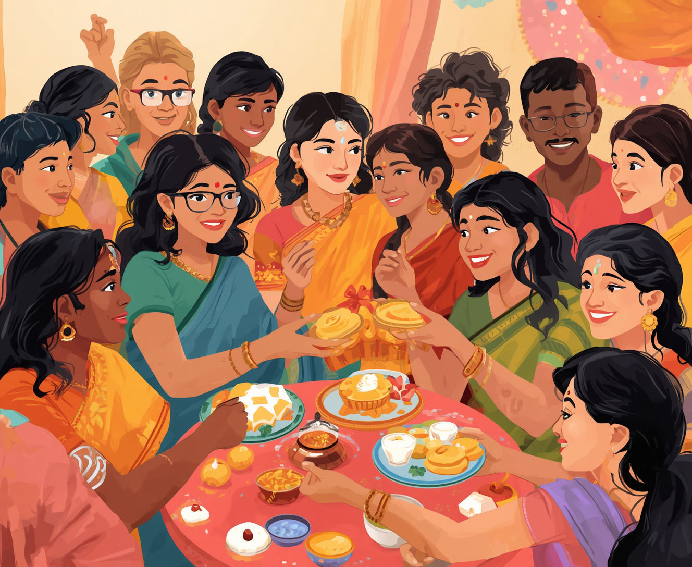
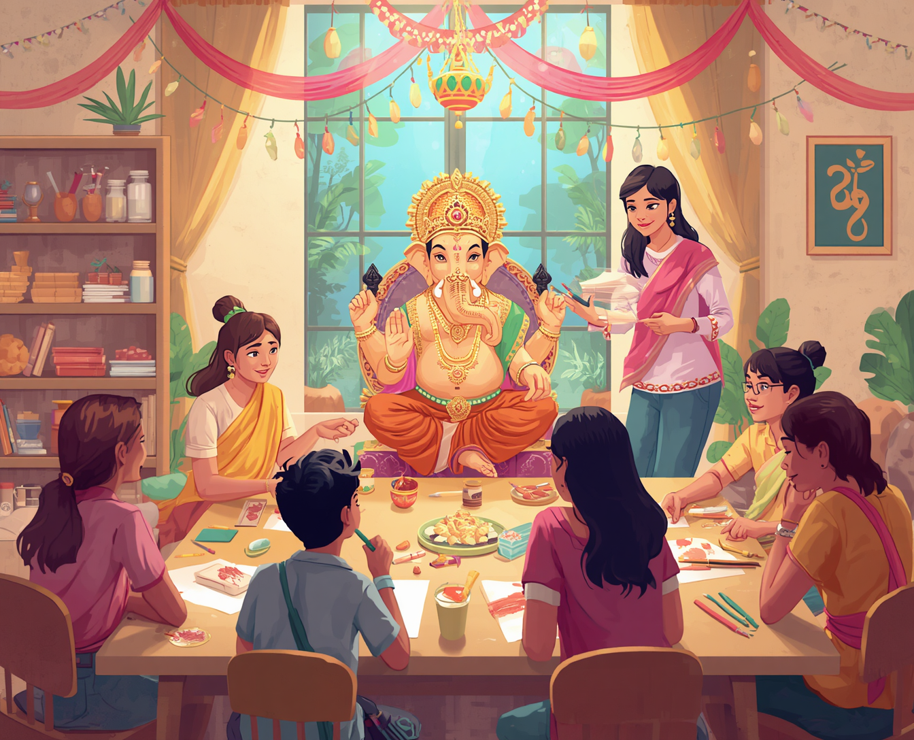

Cultural Performances
Experience the joy of traditional music and dance.
Join us in honoring Lord Ganesha through devotion, culture, community, and celebration.
Get Involved
The Ganpati Festival is a time of joyful celebration and profound spirituality. It honors Lord Ganesha, the remover of obstacles and the symbol of wisdom. This festival brings communities together, fostering a sense of unity and reverence.
During this time, devotees express their devotion through vibrant decorations, music and dance. Celebrating Ganesh Chaturthi not only highlights cultural traditions but also deepens spiritual connections.

Join us for a vibrant parade of celebration.
Experience the joy of our community procession, showcasing colorful floats, music and devotion to Lord Ganesh.
Embrace sustainability with our eco-friendly practices.
We promote the use of biodegradable Ganesh idols, encouraging our community to celebrate responsibly while preserving nature.
Experience the joy of traditional music and dance.

Share blessings and enjoy delicious offerings.

Learn about rich Ganesh traditions together.
Unleash your creativity through art.
Capture beautiful festival moments.
Volunteer and support festival activities.